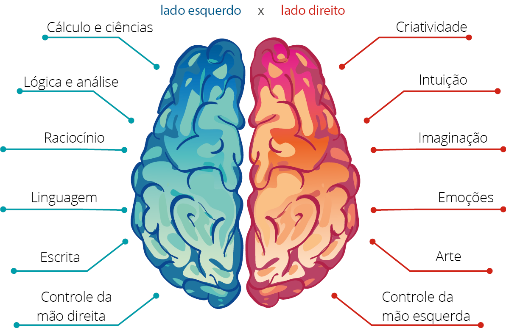
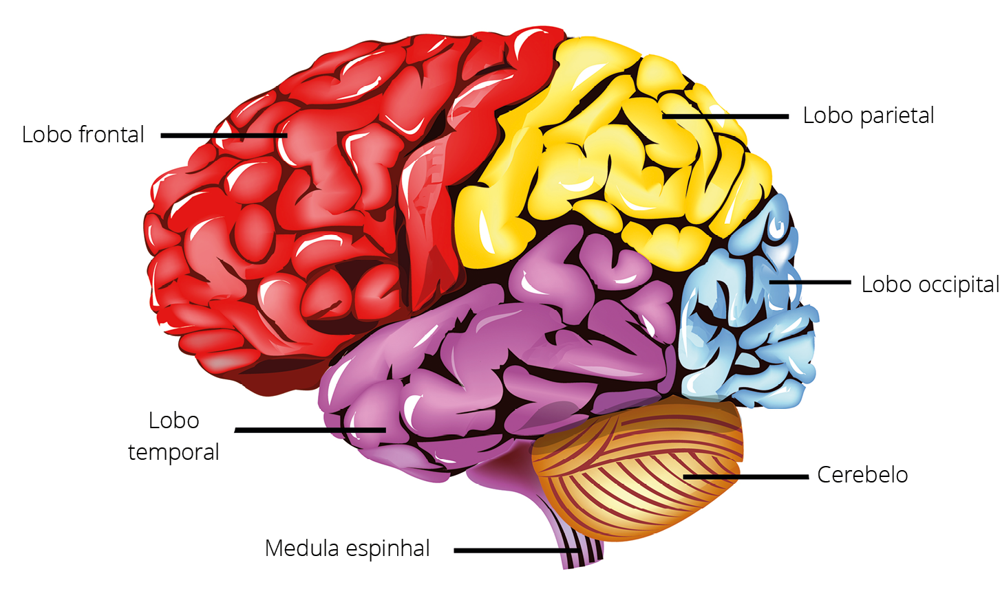
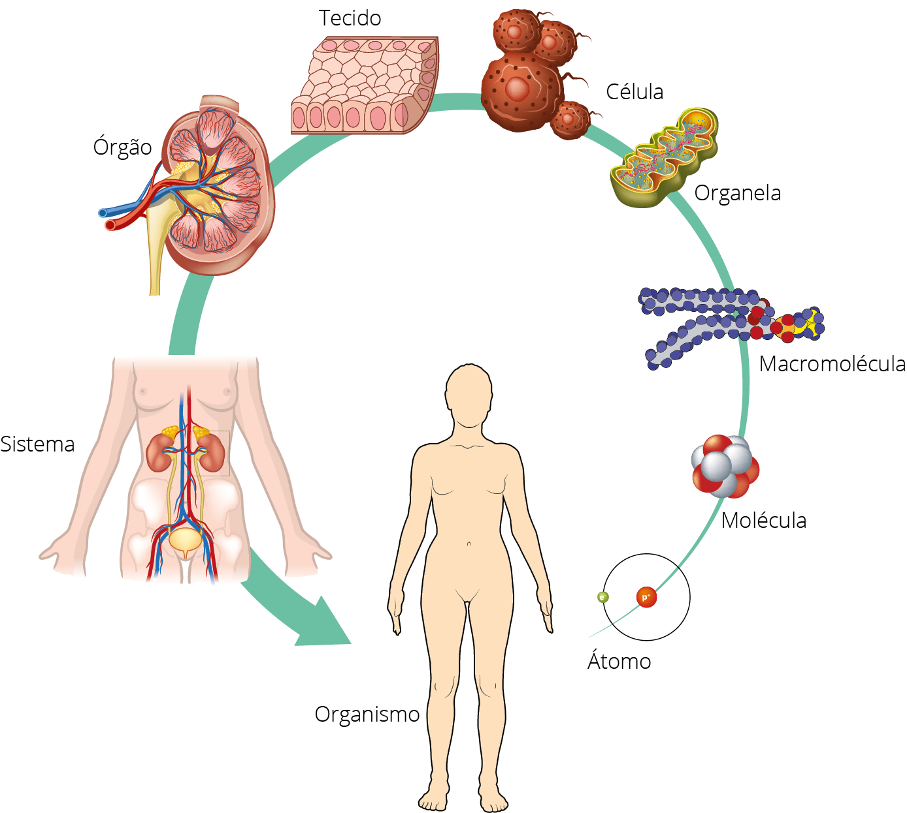
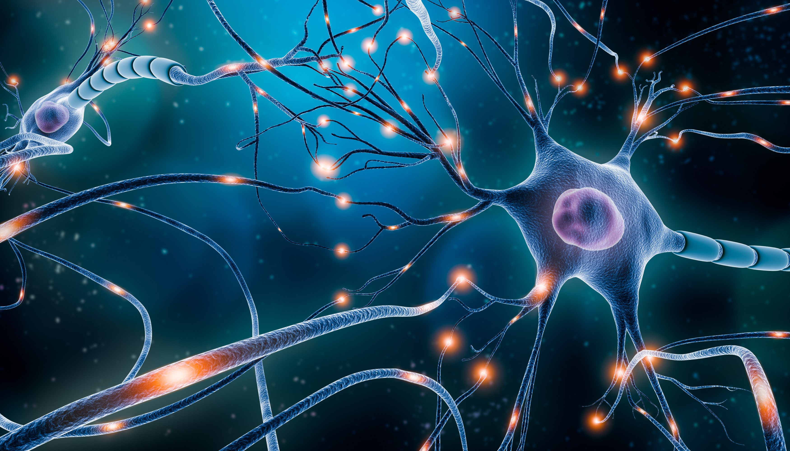
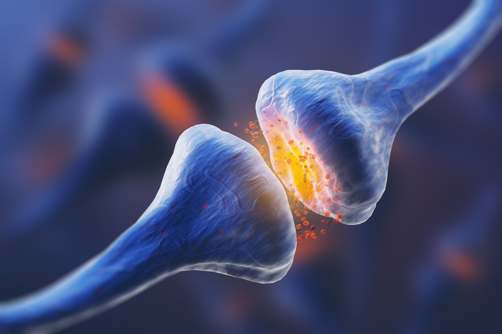

O cérebro é o órgão mais importante do corpo humano e do sistema nervoso, sendo responsável por comandar todas as ações voluntárias e involuntárias do nosso corpo, ele está alojado na cabeça e é protegido pelo crânio. Além disso, é composto por bilhões de neurônios que se conectam entre si, possibilitando que o indivíduo faça conexões, capacitando-o de receber e identificar os estímulos, sendo esses oriundos tanto do próprio corpo quanto do ambiente. O tubo neural é a estrutura neural que, no embrião, dá origem ao cérebro e à medula espinhal, começa a ser formado já na quarta semana de gestação.
As funções cerebrais são responsáveis por controlar e orquestrar todas as ações vitais do nosso corpo no que se refere às ações motoras, dos estímulos sensoriais e das atividades neurológicas, como: temperatura, pressão arterial, respiração, fala, movimentos (andar, dançar, correr etc.), planejamento, raciocínio, capacidade de receber e gerenciar milhares de informações e estímulos, registrar memórias, sonhar, causar emoções entre outros. Devido a todas essas ações involuntárias e voluntárias é que, por exemplo, respiramos sem ao menos pensar ou sempre lembramos do caminho de casa. Essas e outras inúmeras atividades são reguladas e controladas pelo cérebro.
Pode-se dizer que cérebro é o nosso computador, um órgão que se destina às atividades e aos processamentos mentais complexos e está armazenado na caixa craniana, pesa em torno de 1 kg, apresenta em média 2% de massa corporal e consome 20% da energia usada pelo corpo. Além disso, compõe-se de partes nomeadas de cerebelo, tronco encefálico e córtex cerebral (LOURENCETI, 2015).
Acerca dessas partes, o cerebelo é responsável pela coordenação motora, equilíbrio e movimento, é por causa das suas funções que conseguimos caminhar, ter estabilidade e praticar esporte etc. O tronco encefálico liga o cérebro à medula espinhal, iniciando no pescoço e terminando nas costas, controlando todas as funções vitais do nosso corpo, como respirar, engolir e fazer com o que o sangue seja irrigado para todo o corpo. Já o córtex cerebral é formado pelos neurônios e por outras células nervosas, sendo a camada mais externa do cérebro, de coloração acinzentada. Por fim, o núcleo cerebral se apresenta com a cor branca, parte responsável pela conexão dos órgãos sensoriais e pelos músculos (COOB, 2021; HERCULANO-HOUZEL, 2017; KIERNAN, 2003).
Livro
O livro Cérebro: uma biografia, escrito por David Eagleman, neurocientista e professor no departamento de Psiquiatria e Ciências Comportamentais da Universidade de Stanford, expõe as particularidades humanas por meio do conhecimento do cérebro humano. O autor faz questionamentos cotidianos e até simplistas sobre o tema, como: “Quem é você?”, “O que é a realidade?”. O livro convida a entrar nesse universo entre a ciência e a vida real.
Rio de Janeiro: Rocco, 2017.
3.1.1 Hemisférios cerebrais
O cérebro se constitui em dois hemisférios (lados), proporcionalmente divididos em direito e esquerdo e conectados por fibras denominadas corpos calosos. Os estudos sobre a divisão cerebral, ou seja, em dois lados ou hemisférios, iniciaram com Franz Joseph Gall, médico e anatomista alemão, por volta de 1800. Gall deu origem a uma nova frente de pesquisa, a frenologia, teoria criada pelo médico para descrever a hipótese de que se poderia determinar e explicar o caráter e a personalidade da pessoa pelo tamanho e pelo formato da cabeça.
Anos depois, em 1836, o médico francês Marc Dax foi o primeiro a mencionar a existência dos hemisférios, em detrimento aos resultados dos seus pacientes acometidos por derrame, os quais ficavam com sequelas na fala e com um dos lados do corpo paralisado. Esses dados foram apresentados em um congresso, mas não tiveram o devido valor (SABBATINI, 1997).
Dica
O canal do YouTube CogniFittem como foco o treinamento cerebral para profissionais da saúde, estudantes e pesquisadores.
Apenas em 1861, Pierre Broca, cientista e médico anatomista francês, identificou uma correlação da fala com o lado do hemisfério esquerdo com base nas observações de um paciente que, após um acidente vascular cerebral (AVC), não falou mais, apesar de não apresentar deficits motores responsáveis pela fala. Conforme as observações do médico, seu paciente podia assobiar e emitir palavras soltas, mas não se comunicar de maneira efetiva e correta (CARNEIRO, 2002).
Site
O site Cognifit apresenta testes e cursos com foco no treinamento cerebral para profissionais da saúde, estudantes e pesquisadores. No site, sugerimos especialmente a leitura do artigo Funções cerebrais.
Exames do encéfalo realizados após a morte do paciente apontaram uma lesão na região posterior do lobo frontal, sendo esta, a partir de 1864, conhecida e denominada como área de broca. Outros pacientes foram acompanhados pelo médico e nesses ele também observou deficits na fala e na escrita, ou seja, na linguagem como um todo, comprovando que a lesão no lobo ou giro frontal causa danos nas áreas responsáveis pelas imagens das palavras, causando umaafasia, conhecida como afasia de broca.
Glossário
afasia: indivíduo que apresenta dificuldades na linguagem, seja oral ou escrita, tanto na interlocução como na locução é diagnosticado com afasia.
A cada hemisfério do cérebro são atribuídas funções específicas, sendo:
Hemisfério direito: é responsável pela criatividade, intuição, imaginação, música e controle da mão esquerda.
Hemisfério esquerdo: é responsável pelo cálculo, pensamento analítico, raciocínio, linguagem, escrita, lógica, ciências, matemática e pelo controle da mão direita.
Figura 1 – Hemisférios e suas funções

3DBear/Shutterstock
Uma informação interessante sobre os hemisférios é que o controle de cada lado do corpo é feito pelo hemisfério contrário, ou seja, o hemisfério esquerdo é responsável pelas funções corporais do lado direito e o hemisfério direito é responsável pelas funções corporais do lado esquerdo (COOB, 2021; HERCULANO-HOUZEL, 2017; KIERNAN, 2003).
Em cada hemisfério existem quatro lobos, os quais estudaremos a seguir.
3.1.2 Lobos cerebrais
O cérebro é dividido em quatro lobos ou lóbulos cerebrais que estão conectados entre si. Os lobos são denominados de frontal, parietal, temporal e occipital, eles estão interligados pelos ossos do crânio. Cada lobo é responsável por funções predeterminadas:
Figura 2 – Lobos cerebrais

GraphicsRF.com/Shutterstock
Vamos entender um pouco mais sobre cada região:
Lobo frontal: situa-se na região frontal da cabeça, sendo considerada a mais elaborada, sendo o responsável pelas funções: da escrita, dos pensamentos, da fala, da coordenação motora e de memórias a curto prazo que serão convertidas, futuramente, em memória a longo prazo pelo hipocampo; de regular as emoções e de planejar as ações.
Lobo parietal: é responsável por identificar as informações recebidas pelos sentidos.
Lobo temporal: é responsável pela memória e pelo reconhecimento.
Lobo occipital: é responsável por processar as informações visuais.
Para que possamos entender o funcionamento cerebral é de suma importância conhecer e reconhecer o sistema nervoso, o qual abordaremos na sequência (COOB, 2021; HERCULANO-HOUZEL, 2017; KIERNAN, 2003).
Vídeo
O canal do YouTube Anatomia papel e caneta apresenta o conteúdo por meio de desenho. Muito interessante, didático e criativo, com qualidade e linguagem acessível a todos os públicos. Indicamos o vídeo Anatomia do sistema nervoso – Lobos cerebrais.
3.1.3 Sistema nervoso central (SNC) e sistema nervoso periférico (SNP)
Como qualquer outro sistema, o sistema nervoso é formado por tecidos, mas antes de explanar sobre suas funções e particularidades, começaremos com a definição do que é um sistema.
O organismo é formado por um conjunto de células que se unem para formar os tecidos, que, sucessivamente, juntam-se e formam os órgãos e, por fim, unem-se e formam os sistemas, conforme detalhado na figura a seguir.
Figura 3 – Níveis de organização do corpo humano

EreborMountain/Shutterstock
Existem inúmeros sistemas: digestivo, circulatório, respiratório, urinário, locomotor, nervoso, entre outros. Vejamos alguns deles a seguir.
O sistema nervoso está dividido em central e periférico e dentro de cada um desses sistemas existem outras subdivisões. O sistema nervoso central (SNC) é composto pela medula espinhal e pelo encéfalo, sendo este constituído pelo cérebro, tronco encefálico e cerebelo.
O sistema nervoso periférico (SNP) é composto por nervos, gânglios e por terminações nervosas. O SNC e o SNP se conectam diretamente por meio das células funcionais e estímulos nervosos: os neurônios. As funções do sistema nervoso são basicamente três:
Sensorial: consiste na identificação de estímulos externos e internos.
Integrativa: consiste no processamento e análise das informações e tomada de decisões frente às informações.
Motora: consiste nas respostas dos órgãos, glândulas e músculos.
Vídeo
O canal Neurofuncional é apresentado por um fisioterapeuta que traz o conteúdo de maneira didática em slides elaborados e muito explicativos. Sugerimos o vídeo Neuroanatomia do sistema nervoso central (SNC). Vale a pena conferir!
O sistema nervoso está ligado diretamente ao sistema endócrino para realizar e regular as funções e respostas corporais.
3.1.4 Neurônios
Todas as concepções que temos a respeito de nós mesmos e das outras pessoas são produzidas nessa máquina chamada cérebro. As principais células responsáveis pelo funcionamento do cérebro são os neurônios, que têm a função de receber e transmitir informações por meio de estímulos e fazer conexões com outros neurônios para concluir esse processo.

MattLphotography/Shutterstock
Neurônios são como uma unidade de informações, recebidas tanto do corpo quanto do ambiente.
Os neurônios podem ser entendidos como uma unidade de informações, sendo eles compostos de dendritos, corpos celulares, axônio e terminações axônicas que são responsáveis pela emissão dos sinais elétricos. Esses sinais são os encarregados por receber e transmitir os estímulos, tanto do ambiente quanto do próprio corpo, possibilitando que o corpo execute e dê respostas às ações. Além disso, as informações químicas são transformadas em informações elétricas nos neurônios.
O cérebro é dividido em parte branca e parte cinza. A parte branca apresenta neurônios em sua composição que são revestidos por camada de gordura, chamadas de bainha de mielina. Essa bainha contém ácidos graxos de ômega 3 em sua estrutura e age como um isolante elétrico, semelhante à função de um sapato de borracha que usamos para nos proteger e não levar um choque.
A parte cinza do cérebro é composta por neurônios sem a bainha de mielina e os estímulos elétricos percorrem os axônios e o tronco em busca dos botões terminais de ativação, ou seja, são os neurônios que encaminham os estímulos. Nesses botões terminais, existem espaços entre um neurônio e outro, que são denominados de sinapses ou fendas sinápticas (COOB, 2021; HERCULANO-HOUZEL, 2017; KANDEL et al., 2014; KIERNAN, 2003).
Livro
No livroA vantagem humana: como nosso cérebro se tornou superpoderoso, a autora explica como o cérebro humano se desenvolveu mais do que qualquer outra espécie após a descoberta do cozimento dos alimentos, abordando temas complexos com leveza e explicando as nuances que permeiam o desenvolvimento da nossa espécie.
HERCULANO-HOUZEL, S. São Paulo: Companhia das Letras, 2017.
A seguir estudaremos as funções da sinapse e suas intercorrências no cérebro.
3.1.5 Sinapse
Ininterruptamente acontecem no cérebro bilhões de reações químicas que são transformadas em estímulos elétricos. As sinapses são responsáveis pela transmissão dos impulsos nervosos, tanto de um neurônio para outro quanto para órgãos efetores (músculos ou glândulas) que têm como função receber os estímulos do SNC. No primeiro caso, são sinapses nervosas, já no segundo caso, trata-se de sinapses neuromusculares.

KateStudio/Shutterstock
Sinapses elétricas.
As sinapses nervosas são subdivididas em duas: (i) química e (ii) elétrica. A sinapse química acontece em quase todo o corpo e os neurônios não se tocam, apesar de ficarem próximos. Um neurônio passa o estímulo para o outro, de modo unidirecional, ou seja, segue uma única direção.
As sinapses químicas são transmitidas por meio dos neurotransmissores e têm como função serem os responsáveis por transmitir as informações de um neurônio para outro. Cada neurotransmissor tem uma função específica, podendo ser excitatórios, que estimulam os estímulos nos neurônios pós-sináptico, ou inibitórios, inibindo as funções dos neurônios pós-sináptico.
Nas sinapses elétricas, diferentemente da química, os neurônios estão muito próximos e se comunicam entre si. Os estímulos (íons) são transmitidos por meio de canais, de um neurônio para outro. A sinapse elétrica passa de maneira bidirecional, ou seja, o mesmo neurônio pode receber e transmitir estímulos, outro ponto que a diferencia da sinapse química (COOB, 2021; HERCULANO-HOUZEL, 2017; KANDEL et al., 2014; KIERNAN, 2003).
Por fim, encerram-se aqui os assuntos pertinentes ao conhecimento das funções cerebrais. Iniciaremos, a seguir, a abordagem das funções executivas. O conhecimento sobre as particularidades do cérebro é de suma importância para que o tema funções executivas seja apresentado e a sua influência no TEA seja compreendida.
Livro
No livro Neuroanatomia: pintar para aprender, a autora e organizadora Silvana Regina de Melo apresenta uma proposta inovadora. Por meio da pintura, o livro propõe aquisição de novos conhecimentos, de maneira lúdica e descontraída.